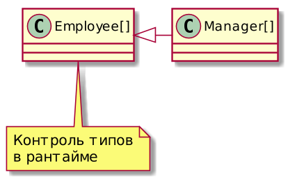
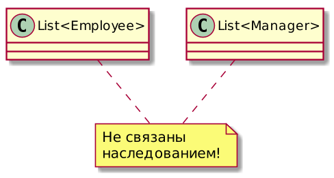

Core Java
Курс лекций. Лекция 6
@inponomarev
До появления дженериков
Manager ceo = ...;
Manager cto = ...;
Employee cleaner = ...;
List managers = new ArrayList();
managers.add(ceo);
managers.add(cto);
//bug!!
managers.add(cleaner);
//typecast with runtime exception -- too late!
Manager m = (Manager) managers.get(2);
После появления дженериков
Manager ceo = ...;
Manager cto = ...;
Employee cleaner = ...;
List<Manager> managers = new ArrayList<>();
managers.add(ceo);
managers.add(cto);
// не скомпилируется!
// managers.add(cleaner);
// приводить тип не нужно!
Manager m = managers.get(1);Определяем собственный параметризованный класс
public class Pair<T> {
private T first;
private T second;
public Pair() { first = null; second = null; }
public Pair(T first, T second) {
this.first = first;
this.second = second;
}
public T getFirst() { return first; }
public T getSecond() { return second; }
public void setFirst(T newValue) { first = newValue; }
public void setSecond(T newValue) { second = newValue; }
}Определение и использование
Pair<String> pair = ...
//ЧТО ЭКВИВАЛЕНТНО ЗАМЕНЕ T НА String
Pair(String, String)
String getFirst()
String getSecond()
void setFirst(String)
void setSecond(String)Generic methods
public <T> T getRandomItem(T... items) {
return items[ThreadLocalRandom.current().nextInt(items.length)];
}
String s = getRandomItem("A", "B", "C");
Manager m = getRandomItem(ceo, cto, cfo);Другой пример
public <T> T getRandomItem(List<T> items) {
T result =
items.get(
ThreadLocalRandom.current().nextInt(items.size()));
return result;
}Промежуточные выводы
Использование параметризованных классов — простое (просто укажите параметры,
List<Manager>)Использование параметризованных методов — ещё проще: type inference:
Manager m = getRandomItem(…);Написание собственных параметризованных классов и методов — задачка более сложная.
Bounded types
public <T extends Person> String getRandomPersonName(List<T> items) {
Person result = //можно написать и T result =
items.get(ThreadLocalRandom.current().nextInt(items.size()));
return result.getName();
}Intersection types
//через амперсанд сколько угодно интерфейсов,
//но не более одного класса
public <T extends Person & Payable>
String getRandomNameAndPayment(List<T> items) {
T result =
items.get(
ThreadLocalRandom.current().nextInt(items.size()));
return result.getName() //из Person!
+ result.getPayment(); //из Payable!
}Реализация дженериков
Появились в Java 5
Стояла задача обратной совместимости
Generics — возможность языка, а не платформы
Type Erasure, будь он неладен!
Сырые типы
Generic Type (source) | Raw Type (compiled) |
| |
Ограниченные типы вместо Object
Generic Type (source) | Raw Type (compiled) |
| |
Вызовы методов
Source code | Compiled |
| |
Bridge methods для сохранения полиморфизма
Source code | Compiled |
| |
Итог: как это работает
Параметризованных классов в JVM нет, только обычные классы и методы.
Типовые параметры заменяются на Object или на свою границу.
Для сохранения полиморфизма добавляются связывающие методы (bridge methods).
Сведение типов добавляется по мере необходимости.
Никогда не употребляйте сырые типы
Возможность назначать переменным сырые типы оставлена для обратной совместимости с кодом, написанным до Java5.
Java5 вышла в 2004 году.
List<Manager> a = new ArrayList<>();
//Употребили сырой тип.
List b = a;
//Компилируется и выполняется, список испорчен!
b.add("manager");
//Выполняется: list.get вернул String как Object
System.out.println(b.get(0));
//ClassCastException при выполнении
Manager m = a.get(0);Понимание дженериков в Джаве — это не про то, что с ними делать можно, а про то, что с ними делать нельзя.
Стирание типов → невозможность определить параметр типа в Runtime
//ошибка компиляции! не знаем мы в рантайме параметр типа!
if (a instanceof Pair<String>) ...
//вот так -- получится...
if (a instanceof Pair<?>) ...Стирание типов до Object → невозможность использовать примитивные типы в качестве параметров
//увы, невозможно!
List<int> integers = ... //ошибка компиляции!
List<Integer> integers = ...
integers.add(42); /*под капотом будет autoboxing:
integers.add(Integer.valueOf(42);*/
int v = integers.get(0); /*под капотом будет
unboxing: v = integers.get(0).intValue();*/Нужна производительность? Пишем специальные реализации.
Нельзя инстанцировать типы-параметры
class Pair<T> {
T newValue {
return new T(); //увы, ошибка компиляции!
}
}Решается с помощью метакласса и рефлексии (о которой речь впереди)
class Container<T> {
//bounded wildcard type, речь впереди
Class<? extends T> clazz;
Container(Class<? extends T> clazz) {
this.clazz = clazz;
}
T newInstance() throws ReflectiveOperationException {
//если нашёлся открытый конструктор без параметров!
return clazz.newInstance();
}
}
Container<Employee> container1 = new Container<>(Employee.class);Тем более нельзя инстанцировать массив типа-параметра
public T[] toArray(){
//Не скомпилируется
return new T[size];
}Решается передачей параметра, например, в ArrayList:
/* Если массив достаточных размеров -- используе м его,
если недостаточных -- конструируем новый через рефлексию*/
public <T> T[] toArray(T[] a)Массивы и дженерики — лютые враги
//Не скомпилируется: Generic Array Creation.
List<String>[] a = new ArrayList<String>[10];
//...ведь такой массив не будет иметь
//полную информацию о своих элементах!Забьём значения кувалдой и устроим heap pollution
List<String>[] a = (List<String>[])new List<?>[10];
Object[] objArray = a;
objArray[0] = (List<String>) Arrays.asList("foo");
//a[1] не пропустит в compile-time
//но objArray[1] пропустит и в compile-time, и в run-time
objArray[1] = (List<Manager>) Arrays.asList(new Manager());
//Runtime error: Manager cannot be cast to String
String s = a[1].get(0);
//...это и называется heap pollution.Varargs — всё равно массив…
Тот же heap pollution, что и в прошлом примере:
static void dangerous(List<String>... stringLists){
List<Integer> intList = new ArrayList<Integer>() {{add(42);}};
Object[] objects = stringLists;
objects[0] = intList;
//ClassCastException
String s = stringLists[0].get(0);
}
dangerous(new ArrayList<>());Компилятор что-то предчувствует…
Чтобы успокоить компилятор, надо поставить аннотацию @SafeVarargs:
/*Я даю честное слово, что не буду
устраивать heap pollution!*/
@SafeVarargs
static void dangerous(List<String>...…и компилятор успокоится.
Зачем?!
Всё потому, что иметь varargs с параметризованными типами удобно!..
Arrays.asList(T… a)Collections.addAll(Collection<? super T> c, T… elements)EnumSet.of(E first, E… rest)
Если вести себя хорошо, можно ставить @SafeVarargs, и всё будет хорошо:
Не записывать ничего в элементы массива,
Не раздавать ссылку на массив параметров наружу.
Нельзя параметризовать
Исключения
ловля исключений — это проверка их типов,
дальше сырых типов мы в рантайме проверить не можем.
Анонимные классы
Инстанцируется по месту, не может быть несколько классов, параметризованных по-разному.
Enum-ы.
Параметры типов нельзя использовать в статическом контексте
public class Container<T> {
private static T value; //не скомпилируется.
public static T getValue(); //не скомпилируется
}
//Статический контекст ОДИН НА ВСЕХ
Container<Foo>.getValue();
Container<Bar>.getValue();Нельзя реализовывать разные параметризации одного и того же интерфейса
Source code | Compiled |
| |
Ковариантность массивов vs инвариантность дженериков

| 
|
Реальная картина
Как быть, если хочется такого?
List<Manager> managers = ...
List<Employee> employees = ...
//Допустимые варианты, хотим чтоб компилировалось!
employees.addAllFrom(managers);
managers.addAllTo(employees);
//Недопустимые варианты, не хотим чтоб компилировалось!
managers.addAllFrom(employees);
employees.addAllTo(managers);Так не получится…
//можно переносить только одинаково типизированные списки
class List<E> {
void addAllFrom (List<E> list){
for (Е item: list)
add(item);
}
void addAllTo (List<E> list){
for (E item: this)
list.add(item);
}
}Wildcard Types
class List<E> {
//для List<Employee> "пролезет" List<Manager>!!
void addAllFrom (List<? extends E> list){
for (Е item: list)
add(item);
}
}Что можно сделать с объектом, типизированным ? extends?
List<? extends E> list = ...
//это понятно
E e1 = list.get(...);
E e2 = ...;
//не скомпилируется! ПОЧЕМУ??
list.add(e2);
//скомпилируется. ПОЧЕМУ??
list.add(null);В общем, addAllTo реализовать не получится…
В обратную сторону (контравариантные типы)
class List<E> {
//для List<Employee> "пролезет" List<Person>!!
void addAllTo (List<? super E> list){
for (Е item: this)
list.add(item);
}
}Что можно сделать с объектом, типизированным ? super?
List<? super E> list = ...
E e1 = ...;
//скомпилируется!
list.add(e1);
list.add(null);
//Только Object. ПОЧЕМУ??
Object e2 = list.get(...);Unbounded wildcard
List<?>— это то же, чтоList<? extends Object>. (Вопрос: почему не<? super Object>?)Брать элементы можем, но тип только
Object.Класть можем только null.
Мнемоническое правило
PECS
Producer Extends, Consumer Super
public static <T> max (Collection<? extends T> coll,
Comparator<? super T> comp)
Collections.max(List<Integer>, Comparator<Number>)
Collections.max(List<String>, Comparator<Object>)Правила использования wildcard-типов
Используются в аргументах методов и локальных переменных.
Невидимы пользователю API, не должны возвращаться.
Их цель — принимать те аргументы, которые надо принимать, и отвергать те аргументы, которые надо отвергать.
Должны быть используемы в API, иначе API будет слишком "жёстким" и непригодным для использования.
Wildcard Capture
public static void swap(Pair<?> p) {
Object f = p.getFirst();
Object s = p.getSecond();
//УУУППС!!
// (мы знаем, что они правильного типа,
// но ничего не можем поделать)
p.setFirst(...);
p.setSecond(...);
}Метод с type capture
public static void swap(Pair<?> p) {
return swapHelper(p);
}
private static <T> void swapHelper(Pair<T> p) {
T f = p.getFirst();
p.setFirst(p.getSecond());
p.setSecond(f);
}Recursive Generics
class Holder<E, SELF extends Holder<E, SELF>>{
E value;
SELF setValue(E value){
this.value = value;
return (SELF) this;
}
}
class StringHolder extends Holder<String, StringHolder> {
void doSmth() {...};
}
StringHolder h = new StringHolder().setValue("aaa").doSmth();Что почитать-посмотреть
Полезное
J. Bloch, Effective Java, 3rd ed. Chapter 5 — Generics. Addison-Wesley, 2018
Дичь
Ross Tate. Java is Unsound: The Industry Perspective (2017-01-24).
Иван Бессонов. Тьюринг-полнота Generic типов Java (2017-08-24, на базе публикации от ноября 2016).
Nada Amin & Rose Tate’s example
class Unsound {
static class Constrain<A, B extends A> {}
static class Bind<A> {
<B extends A>
A upcast(Constrain<A,B> constrain, B b) {
return b;
}
}
static <T,U> U coerce(T t) {
Constrain<U,? super T> constrain = null;
Bind<U> bind = new Bind<U>();
return bind.upcast(constrain, t);
}
public static void main(String[] args) {
String zero = Unsound.<Integer,String>coerce(0);
}
}Radu Grigore’s Example
BadList<? super String> badList = null;
List<? super BadList<? super String>> list = badList;